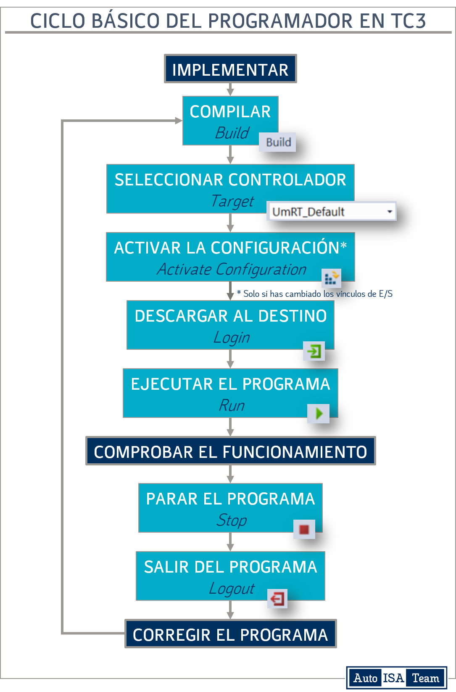
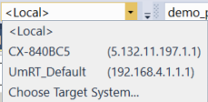
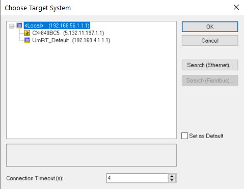
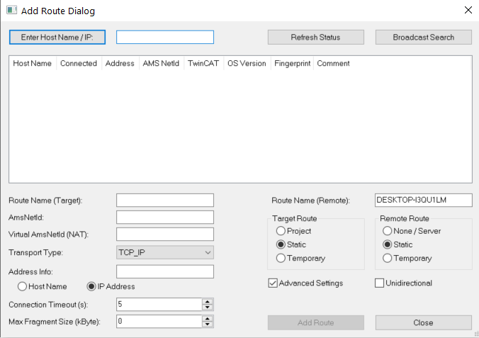
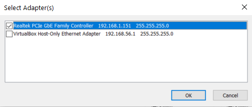
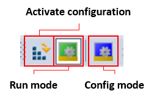

⚡ Ejecución de Programas¶
Una vez terminada la implementación del programa, procederemos a ponerlo en ejecución. El procedimiento para ejecutar el programa implica, habitualmente, la siguiente secuencia de pasos:
- Compilar el proyecto.
- Seleccionar el controlador que queremos que ejecute el mismo.
- Activar la configuración.
- Descargar el programa en el controlador.
- Finalmente, poner el programa en ejecución.
Este proceso lo llamaremos, de manera informal, el Ciclo Básico del Programador en TC3, que explicaremos paso por paso.

1 > Compilar programa¶
Una vez el programa está implementado (independientemente del lenguaje utilizado):
- Compilar el proyecto: Menú
Build → Build [nombre del proyecto]. - Asegurarse de que no hay errores.
-
Si has declarado variables en las imágenes de entrada y/o salida:
Ejemplo
PROGRAM MAIN VAR Pulsador AT %I*: BOOL; Lampara AT %Q*: BOOL; END_VAR-
Verificar que las variables aparecen en las secciones
PlcTask InputsyPlcTask Outputsen la zona de la instancia del proyecto.
-
2 > Seleccionar controlador destino¶
En TwinCAT 3, el programa puede ser ejecutado en distintos "controladores"
- Emulador
Local. - Simulador
Um_RT_Default(User mode Real Time). Recomendado para el laboratorio. - Controlador remoto (PLC).
Emulador (local)¶
Para poder usar este controlador debemos haberle dejado a TwinCAT 3 que tuviera acceso al kernel de Windows durante la instalación, de manera que pueda hacer uso de, al menos, un core del equipo para ejecutar el programa.
El emulador local ejecuta el programa exactamente de la misma manera que si lo hiciéramos en un equipo remoto pero, obviamente, no tenemos acceso al hardware. De esta forma, podremos interactuar con las variables de entrada y salida mediante la escritura/forzado de variables o usando la visualización (si hemos diseñado alguna para controlar las variables).
En este caso no tendremos que asociar las variables a los terminales de E/S, ya que no habrá ninguno disponible.
Para usar este controlador, simplemente asegúrate de seleccionar Local en el desplegable del Target.

Importante
La instalación y uso de este modo tiene ciertos requisitos que se cumplen en la mayoría de los equipos en los que se puede instalar, pero, en ocasiones, puede dar algún problema de incompatibilidad. Para estos casos, se recomienda utilizar el simulador local explicado más adelante.
Simulador (Um_RT_Default)¶
Información
Este será el controlador a utilizar en las prácticas cuando no se tenga acceso a las estaciones.
TwinCAT 3 proporciona una vía alternativa al emulador local que permite ejecutar código en un simulador en modo usuario dentro de Windows. La diferencia principal con el emulador es que este garantiza el tiempo de ciclo del sistema mientras que el simulador no lo hace. Aún así, las restricciones de tiempo de los programas que usaremos no son muy exigentes así que el simulador será suficiente para una ejecución satisfactoria. A cambio, elimina los problemas de compatibilidad que la instalación del emulador local pueda tener.
Al igual que con el emulador local, no tendremos que asociar las variables a los terminales de E/S, ya que no habrá ninguno disponible. De nuevo, podremos interactuar con las variables de entrada y salida mediante la escritura/forzado de variables o usando la visualización (si hemos diseñado alguna para controlar las variables).
Para usar este controlador, tendremos que ejecutar en "modo Administrador" el archivo TC3_UmRT_Start.bat que proporcionamos en la carpeta Automatización > programas del CV (alternativamente, hay una copia de este fichero en la carpeta C:\TwinCAT\3.1\Runtimes\UmRT_Default). Esto abrirá un terminal de Windows con la información relativa a la ejecución del simulador. Minimizaremos esta ventana y la dejaremos trabajar de fondo.
Problema en el laboratorio
Se ha detectado que este procedimiento no funciona en los PCs del laboratorio por lo que, alternativamente, hay que realizar lo siguiente:
Pulsar Win+R e introducir el siguiente texto:
C:\TwinCAT\3.1\Runtimes\UmRT_Default\Start.bat
Importante
No debemos cerrar la ventana del terminal de Windows abierto por TC3_UmRT_Start.bat mientras queramos usar este simulador.
Una vez hecho esto, aparecerá el texto UmRT_Default en el desplegable del target:

Importante
Una vez finalizado nuestro trabajo con el simulador, pulsaremos la tecla 'x' en el terminal para apagar el simulador y la ventana se cerrará automáticamente.
Controlador remoto (PLC)¶
Información
Este será el controlador que utilizaremos en las prácticas cuando se tenga acceso a las estaciones.
Por último, podremos ejecutar nuestro programa en un controlador remoto (por ejemplo, el PLC de la estación FMS20x). De esta manera, tendremos acceso al hardware que esté conectado al controlador y podremos interactuar con él.
Para usar este controlador, lo seleccionaremos en el desplegable de Target.
En este ejemplo, el controlador sería el mostrado como CX-840BC5, pero, en las prácticas, deberán aparecer los nombres de las estaciones (ej. FMS-201). Si no aparece el controlador deseado en el listado, o se ha perdido la conexión con él, será necesario escanear la red para encontrar el equipo remoto y establecer una nueva conexión.
Búsqueda de controladores remotos¶
Recomendación
Hay un video de ejemplo en el Campus Virtual en Automatización > Videos > TC3 con nombre 9_Runtime_Target_*.mkv.
Para buscar controladores remotos en la red local del laboratorio, hay que seguir el siguiente procedimiento.
-
Desplegar
Targety seleccionarChoose Target System....
-
Pulsar sobre
Search (Ethernet)...Importante
Aceptar el siguiente mensaje: Searching for remote system only possible from local system. Change back to local system, si aparece.
-
Se abre el siguiente cuadro de diálogo, donde hay que seleccionar
🔳 Advanced Settings.:
-
Pulsar sobre el botón
Broadcast Search. -
Seleccionar los adaptadores de red en el popup que aparece y pulsar
OK.
-
Seleccionar el PLC deseado de la lista que aparezca.
- Marcar
🔳 IP Address. Importante - Pulsar en el botón
Add Route. -
En el popup que aparece (Add Remote Route):
- Desmarcar
🔲 Secure ADSsi está seleccionado. Importante - Dejar los campos
UseryPasswordtal y como están.
- Desmarcar
-
Observar que aparece una
xen la columna Connected. - Cerrar el cuadro de diálogo pulsando
Close.
-
-
Ahora debería aparecer el controlador en el listado del cuadro de diálogo
Choose Target System:- Seleccionar el controlador en la lista y pulsar
OK.
- Seleccionar el controlador en la lista y pulsar
-
Si aparece un popup indicando que es necesario cambiar la plataforma, pulsar en
Yes.
Escaneado de terminales¶
La primera vez que conectemos con un controlador remoto, deberemos realizar un escaneado de sus módulos para determinar los terminales de entrada y salida disponibles en los mismos. El procedimiento es el siguiente.
Importante
Para poder hacer este proceso, debemos asegurarnos que TwinCAT 3 está en modo configuración (Configuration Mode) y no en ejecución (Run Mode).

-
En el explorador de la solución (
Solution Explorer):- Seleccionar:
I/O > Devices. - Pulsar en el menú
TwinCAT > Scan (BD Scan)(alternativamente, CD sobreI/O Devicesy pulsarScan). - Aceptar el mensaje de que no todos los dispositivos pueden encontrarse automáticamente.
- Seleccionar únicamente el dispositivo
EtherCATy pulsarOK. - Aceptar la búsqueda de boxes (terminales) pulsando
Yes. - Aceptar la activación del modo Free Run pulsando
Yes.
- Seleccionar:
-
Observar el árbol de I/O en el explorador de la solución.
-
Desplegar el elemento
EK1200y verificar que la lista de terminales se corresponde con la configuración del controlador (en su documentación).Info
Tened en cuenta que el terminal
EL9011es un elemento virtual.
Comprobación de los terminales¶
Tras escanear los terminales por primera vez, es una buena práctica comprobar algunos de los terminales de E/S para asegurarnos de que tenemos acceso a ellos.
Para ello, usaremos un ejemplo en el que tendremos un programa con una variable i_PulsadorMarcha en la imagen de entrada y una variable o_LamparaMarcha en la imagen de salida.
PROGRAM MAIN
VAR
i_PulsadorMarcha AT %I*: BOOL;
o_LamparaMarcha AT %Q*: BOOL;
END_VAR
El procedimiento a seguir es el siguiente:
-
Buscar en el listado de E/S del controlador que hay en su descripción funcional la entrada correspondiente al pulsador de marcha:
- Localizar el Terminal y el Canal de entrada especificado.
- Desplegar el contenido del Canal y hacer DC sobre
Input. - Seleccionar la pestaña Online y verificar que se corresponde con el pulsador:
- Accionar el pulsador de marcha y observar el cambio de valor mostrado en la gráfica.
Importante
Se recomienda seleccionar la pestaña Variable y cambiar el nombre de
Inputpor el nombre de la variable asociada en el listado de E/S (en este ejemplo:i_PulsadorMarcha).Este paso NO vincula el terminal/canal con la variable sino que simplemente lo renombra para ayudarnos a localizarlo posteriormente durante el proceso de vinculación.
-
Buscar en el listado de E/S del controlador que hay en su descripción funcional la salida correspondiente a la lámpara de marcha:
- Localizar el Terminal y el Canal de salida especificado.
- Desplegar el contenido del Canal y hacer DC sobre su
Output. - Seleccionar la pestaña Online y verificar que se corresponde con la lámpara:
- Pulsar
Write. - Pulsar alternativamente
1/0y comprobar que la lámpara se enciende y se apaga.
- Pulsar
Importante
Se recomienda seleccionar la pestaña Variable y cambiar el nombre
Outputpor el nombre de la variable asociada en el listado de E/S (en este ejemplo:o_LamparaMarcha).Este paso NO vincula el terminal/canal con la variable sino que simplemente lo renombra para ayudarnos a localizarlo posteriormente durante el proceso de vinculación.
Una vez realizado esto, guardamos el proyecto.
Vinculación de variables y E/S¶
Recomendación
Hay un video de ejemplo en el Campus Virtual en Automatización > Videos > TC3 con nombre 9_Runtime_Target_*.mkv.
Una vez se han revisado y renombrados los terminales/canales de E/S del controlador, procedemos a vincularlos con las variables de nuestro programa.
El procedimiento es el siguiente (siguiendo con el ejemplo anterior de pulsador/lámpara):
-
DC sobre el canal nombrado como
o_LamparaMarcha(alternativamenteCD > Change Link...):- Seleccionar la variable que queremos vincular en la sección
PLCTask Outputy pulsarOK:MAIN.o_LamparaMarcha. - Observar cómo cambian los iconos del canal
o_LamparaMarchay de la variableMAIN.o_LamparaMarchaen la instancia (aparece una flecha sobre el icono en ambos casos, indicando que hay una vinculación).
- Seleccionar la variable que queremos vincular en la sección
-
De manera similar, DC sobre la variable
MAIN.i_PulsadorMarchaen la secciónPLCTask Input(alternativamenteCD > Change Link...)- Seleccionar en I/O el canal renombrado a
i_PulsadorMarcha - De la misma manera, cambian los iconos del canal
o_LamparaMarchay de la variableMAIN.o_LamparaMarchaen la instancia.
- Seleccionar en I/O el canal renombrado a
Info
Nótese que esta operación se puede hacer desde la instancia hacia la entrada/salida o al revés.
Info
Esta operación solo hay que hacerla cuando tengamos nuevas variables declaradas en las imágenes de entrada o de salida. Una vez realizada la vinculación, la guardaremos y la activaremos siempre que vayamos a trabajar con nuestro programa.
3 > Activar configuración¶
Una vez realizada la selección del controlador y la vinculación de variables con los terminales de E/S (si procede), ahora debemos enviar esta información al controlador en cuestión. Esto se denomina Activar la configuración.
Para ello, deberemos pulsar el icono de Activate Configuration y activar el modo de ejecución (Run Mode) cuando nos lo pregunte TwinCAT 3 en una ventana popup.

4 > Transferir programa¶
Posteriormente, debemos enviar el programa al controlador pulsando el icono de Login, tras lo que se preguntará, en un popup, si queremos crear un puerto de comunicación con el controlador y descargar el programa. Pulsaremos en Yes.

5 > Ejecutar programa¶
Finalmente, pondremos el programa en ejecución pulsando el icono Start.

Importante
Para poder modificar de nuevo el programa, primero hay que parar el programa (Stop) (recomendado) y posteriormente hacer Logout.

Si no se hace Logout sin pulsar antes Stop, el programa seguirá siendo ejecutado en el controlador sin que podamos ver lo que esté ocurriendo en TwinCAT 3. Durante las prácticas, no es conveniente que suceda esto, ya que perderemos control sobre lo que está ocurriendo con un programa que aún está en depuración.
🔌 Activar/desactivar hardware¶
- Si has vinculado las variables de tu programa con el equipo remoto (hiciste la búsqueda del equipo remoto y la exploración de los módulos de E/S), cuando quieras probar tu programa en el Runtime Local o en el simulador local, aparecerá una ventana popup indicando un error.
- Esto se debe a que TC3 quiere establecer conexión con el hardware al que estuviste conectado, pero no puede, ya que el
Targetseleccionado es el local. - Para evitar esto, solo tienes que deshabilitar el hardware haciendo CD sobre el dispositivo buscado y seleccionando Disable.
Importante
Recuerda volver a habilitarlo cuando quieras volver a usar el equipo remoto.